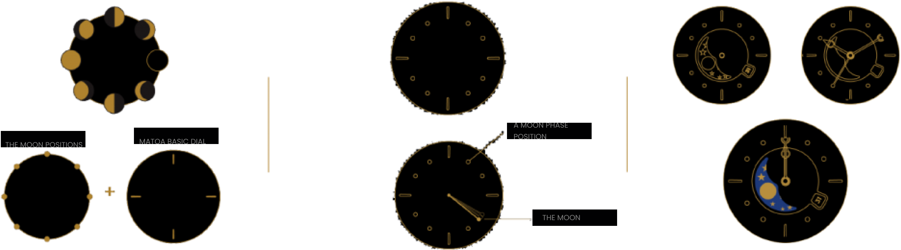
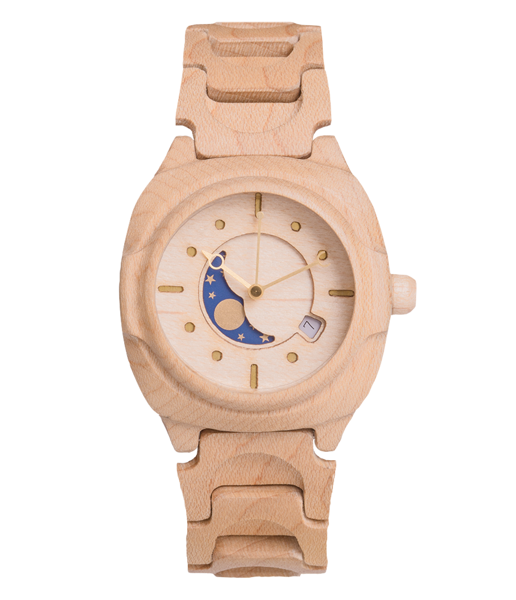
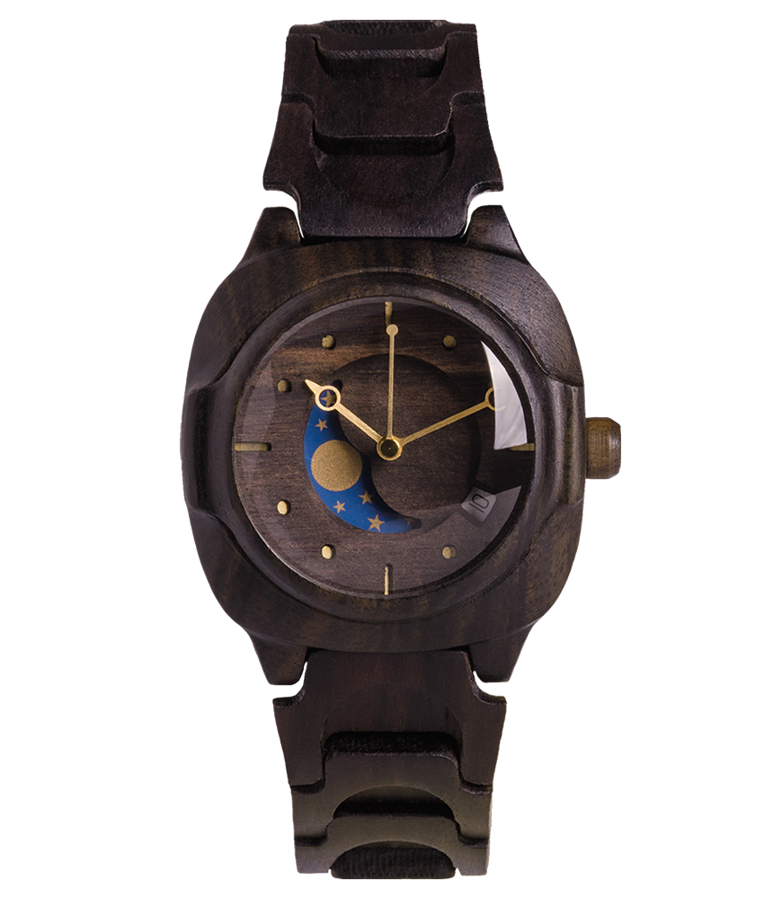

World's Most Advanced Wooden Moon Phase Watch
Rakai
Wooden moon phase watch with high technology and modern design
See Rakai Variants >High Technology
The First Wooden Watch With Dome Glass
Anti-Reflective
Keeps the watch
legible at any time
Anti-Fingerprint
Grease-free and
stain-free watch
Scratchproof
Built with hard
and durable sapphire
glass material
Splashproof
Safe from light
amount of water
Anti-Termite
PU (Polyuretan) covers
the wooden material
Skin Safe
Toxic-free components
in every watch
Lightweight
Perfect as a daily-wear
watch for men
and women
Simple yet Unique Watch Design
The Beauty of Moon Phase on a Watch
Taking inspiration from the uniqueness of each moon phase, Rakai
embraces the distinct characteristics of every person. It is designed to
spice up everyone's look with a combination of the moon and a touch of nature.
Customizable Engrave
Personalized Wooden Watch
Engraved Ebony
Wooden Watch
Engraved Maple
Wooden Watch
Want to make a gift more personalized and stand out?
Customize your watch with engraving on the back of the watch’s case
Requirements :
Maximum 8 characters
Additional fee of Rp 50k needed
Adds up 2-3 days in the making
Available in Different Colors and Sizes
Many Variants, Designed for Men and Women
Rakai Full Moon
Regular Size/Mini Size
Rakai Ebony
Regular Size/Mini Size
Rakai Maple
Regular Size/Mini Size
What They Say About Rakai
From Indonesia's Top Influencer's and Trendsetter's Instagram
Jovi Adhiguna
@joviadhiguna
“Definitely a super duper unique watch
for him or her! RAKAI MAPLE with amazing
deitals! Love this local brand @matoa_id”
Dwi Handayani
@dwihanandaanda
"This one local product that I’m currently
loving is @matoa_id watch. I’m wearing
RAKAI MAPLE. Lightweight and unique design!"
Dikta
@dikta
“Finally found the best moon phase watch.
This @matoa_id RAKAI watch is very
comfortable for daily wear. LOCAL PRIDE!”
Crafted by Matoa Indonesia
With Best Wood Waste Quality
Matoa Indonesia is a local green business with an eco-conscious,innovative,
and creative set of mind. We relish the opportunity to develop new
sustainable yet durable goods, while minimising any potential harm to nature.